kp
kp| Java Mapping Framework MapStruct | Apache Commons Collections |
| Concurrent Radix & Suffix Trees | Eclipse Collections |
The sections of this project:
Java source code:
kp
Action:

 1. With the batch file
"01 Docker build and run.bat" build the image and start the container
1. With the batch file
"01 Docker build and run.bat" build the image and start the container
 with the application
'kp.ApplicationForLibrariesAssay'.
with the application
'kp.ApplicationForLibrariesAssay'.
2. With the batch file
"02 Docker show logs.bat" view the console logs from the application run.
 1.1. Docker image is built using these files:
Dockerfile and
compose.yaml.
1.1. Docker image is built using these files:
Dockerfile and
compose.yaml.
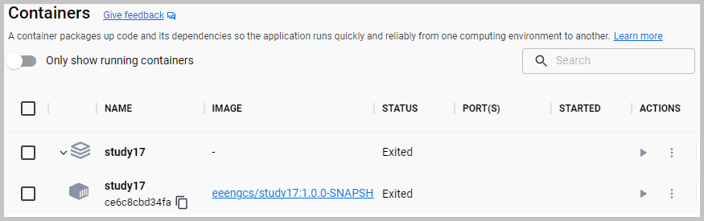
 The screenshot of the created Docker containers.
The screenshot of the created Docker containers.
1.2. Alternative batch files.
For building and running the
'kp.ApplicationForLibrariesAssay' on 'localhost' use
"03 MVN clean install run.bat".
For only running the
'kp.ApplicationForLibrariesAssay' on 'localhost' use
"04 Run Application.bat".
2.1. The mapping launch method:
'kp.mappers.MapperLauncher::launch'
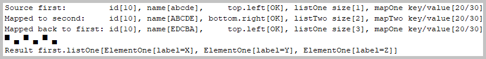
Console log from 'kp.mappers.MapperLauncher::launch' method.
2.2. The mapping source objects:
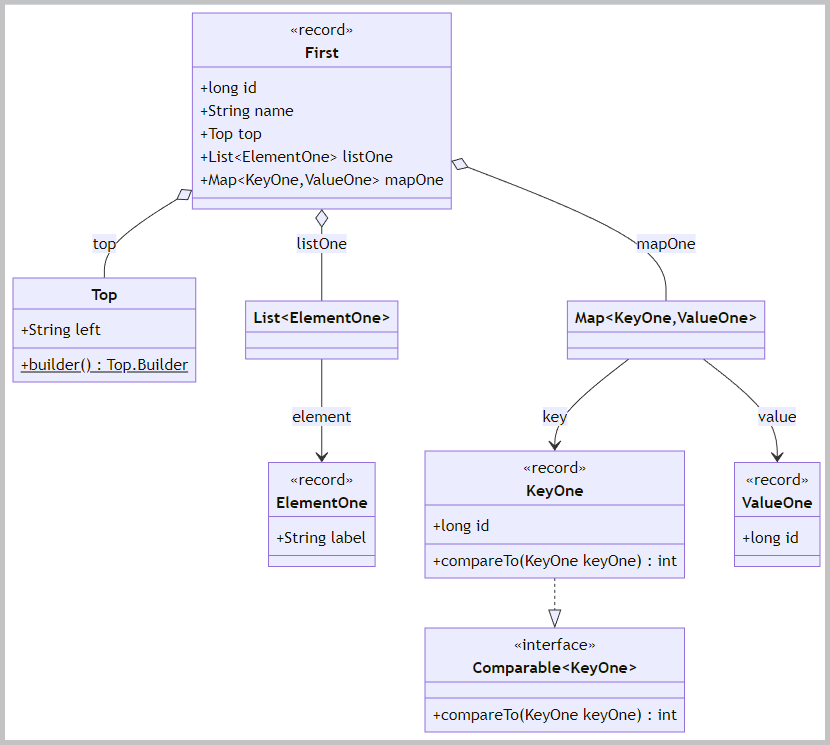
The class diagram of the mapping source objects.
2.3. The mapping target objects:
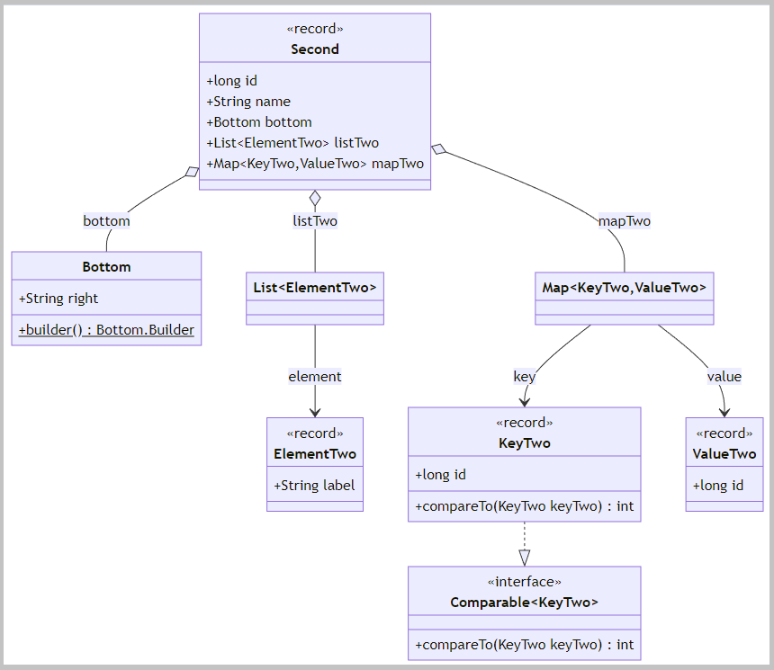
The class diagram of the mapping target objects.
2.4. The interfaces are marked with the annotation '@Mapper':
This marking activates the generation of an implementation of that type via 'MapStruct'.
2.5. The mapping method:
'kp.mappers.FirstMapper::toSecond'
The finishing method:
'kp.mappers.FirstMapper::afterToSecond'
2.6. The inverse mapping method:
'kp.mappers.FirstMapper::fromSecond'
The finishing method:
'kp.mappers.FirstMapper::afterToFirst'
3.1. The method
'kp.collections.commons.ApacheCommonsCollections::researchBidirectionalMap'.
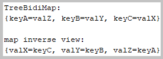
Console log from 'ApacheCommonsCollections::researchBidirectionalMap' method.
3.2. The method
'kp.collections.commons.ApacheCommonsCollections::researchPatriciaTrie'.
PATRICIA: Practical Algorithm to Retrieve Information Coded in Alphanumeric.
A trie is also called a digital tree, radix tree, or prefix tree.
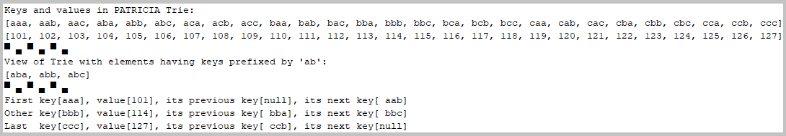
Console log from 'ApacheCommonsCollections::researchPatriciaTrie' method.
Back to the top of the page
4.1. The method
'kp.trees.ConcurrentTrees::researchRadixTree'.
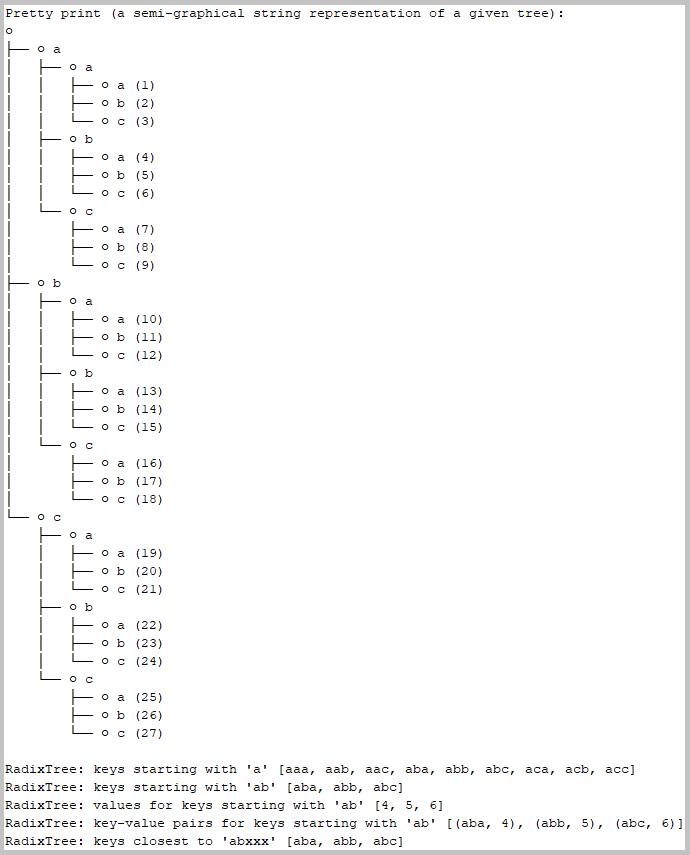
Console log from 'ConcurrentTrees::researchRadixTree' method.
4.2. The method
'kp.trees.ConcurrentTrees::researchSuffixTree'.
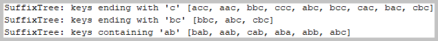
Console log from 'ConcurrentTrees::researchSuffixTree' method.
4.3. The method
'kp.trees.ConcurrentTrees::researchInvertedRadixTree'.
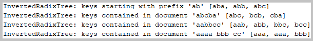
Console log from 'ConcurrentTrees::researchInvertedRadixTree' method.
4.4. The method
'kp.trees.ConcurrentTrees::researchReversedRadixTree'.
Console log from 'ConcurrentTrees::researchReversedRadixTree' method.
4.5. The method
'kp.trees.ConcurrentTrees::researchPrefixesAndSuffixesGenerator'.
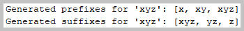
Console log from 'ConcurrentTrees::researchPrefixesAndSuffixesGenerator' method.
4.6. The method
'kp.trees.ConcurrentTrees::researchSolver'.
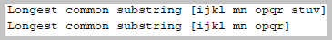
Console log from 'ConcurrentTrees::researchSolver' method.
Back to the top of the page
5.1. The method
'kp.collections.eclipse.EclipseCollections::researchChunksAndPairs'
The chunk - a collection of a specified fixed size.
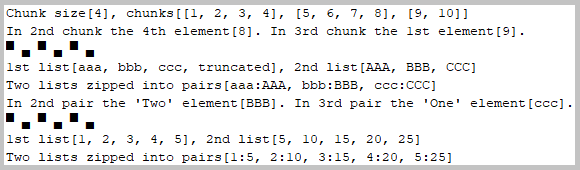
Console log from 'EclipseCollections::researchChunksAndPairs' method.
5.2. The method
'kp.collections.eclipse.EclipseCollections::researchMapFlipping'
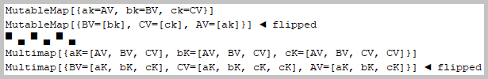
Console log from 'EclipseCollections::researchMapFlipping' method.
5.3. The method
'kp.collections.eclipse.EclipseCollections::researchSetOperations'
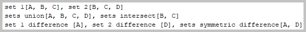
Console log from 'EclipseCollections::researchSetOperations' method.
5.4. The method
'kp.collections.eclipse.EclipseCollections::researchUsingDates'
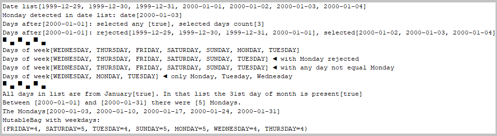
Console log from 'EclipseCollections::researchUsingDates' method.
5.5. The method
'kp.collections.eclipse.EclipseCollections::researchUsingNumbers'
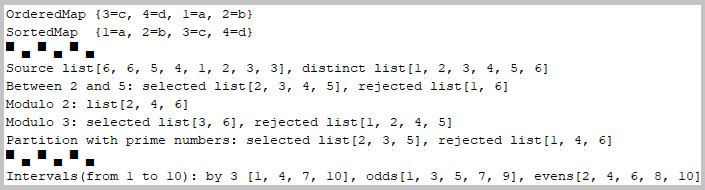
Console log from 'EclipseCollections::researchUsingNumbers' method.
5.6. The method
'kp.collections.eclipse.EclipseCollections::researchStacks'
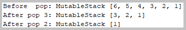
Console log from 'EclipseCollections::researchStacks' method.
Back to the top of the page